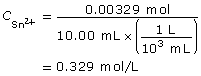

Unit B Conclusion
 Unit
B Diagnostic Self-Check
Unit
B Diagnostic Self-Check
SC 1. Match each of the terms from the list on the left with its description from the list on the right.
| Term | Description |
| a. half-reaction | 1. the apparent charge on an atom |
| b. oxidation | 2. a substance that can accept electrons from another substance |
| c. oxidation number | 3. a reactant in a chemical process that causes the reduction in the oxidation number of another reactant |
| d. oxidizing agent | 4. a chemical change involving an increase in the oxidation number of a substance |
| e. reduction | 5. a type of chemical change involving a transfer of electrons between reacting substances |
| f. reducing agent | 6. a process involving a gain of electrons by one chemical substance |
| g. redox reaction | 7. a reaction that explicitly shows electrons involved in either an oxidation or a reduction |
Program of Studies
SC 1. B1.1k. Students will
- define oxidation and reduction operationally and theoretically
B1.2k. Students will
- define oxidizing agent, reducing agent, oxidation number, half-reaction, disproportionation
Hint
SC 1. Think about readings, investigations, and other instances in which you have seen and used these terms. These terms are often used in questions. It is important that you know the meanings of these terms so that you understand questions.
 Self-Check Answer
Self-Check Answer
SC 1.
| Term | Description |
| a. half-reaction | 7. a reaction that explicitly shows electrons involved in either an oxidation or a reduction |
| b. oxidation | 4. a chemical change involving an increase in the oxidation number of a substance |
| c. oxidation number | 1. the apparent charge on an atom |
| d. oxidizing agent | 2. a substance that can accept electrons from another substance |
| e. reduction | 6. a process involving a gain of electrons by one chemical substance |
| f. reducing agent | 3. a reactant in a chemical process that causes a decrease in the oxidation number of another reactant |
| g. redox reaction | 5. a type of chemical change involving a transfer of electrons between reacting substances |
Lesson(s) to Review
SC 1. Module 3 Lessons 1 and 2
SC 2. In an experimental design, strips of the metals Pb(s), Cr(s), and Al(s) are each placed in aqueous solutions containing Pb2+(aq), Cr2+(aq), and Al3+(aq) respectively. Each metal strip and solution was observed for changes in colour and formation of a precipitate.
What is the experiment designed to do?
- develop half-reactions
- determine net cell potential
- assign oxidation numbers to substances
- rank the relative reactivity of substances
Program of Studies
SC 2. B1.1s. Students will
- design an experiment to determine the reactivity of various metals
Hint
SC 2. Have you completed an investigation like this? What significance is given to substances that react more or less frequently?
Self-Check Answer
SC 2.
d. rank the relative reactivity of substances
Lesson(s) to Review
SC 2. Module 3 Lesson 3
SC 3. Which of the following chemical reactions are redox reactions?
- HCl(aq) + NaOH(aq) → NaCl(aq) + H2O(l)
- HCl(aq) + Mg(s) → MgCl2(aq) + H2(g)
- 2 Cl2(g) → 2 ClO-(aq) + 2 Cl–(aq)
- MgCl2(s) → Mg2+(aq) + 2 Cl–(aq)
- C2H6(g) + 3.5 O2(g) → 2 CO2(g) + 3 H2O(g)
Program of Studies
SC 3. B1.3k. Students will
- differentiate between redox reactions and other reactions, using half-reactions and/or oxidation numbers
Hint
SC 3. A redox reaction involves a transfer of electrons or a change in the oxidation number of some atoms. Can you identify atoms that change their oxidation number?
Self-Check Answer
SC 3.
b. HCl(aq) + Mg(s) → MgCl2(aq) + H2(g)
c. 2 Cl2(g) → 2 ClO–(aq) + 2 Cl–(aq)
e. C2H6(g) + 3.5 O2(g) → 2 CO2(g) + 3 H2O(g)
Lesson(s) to Review
SC 3. Module 3 Lessons 1, 3, and 4
SC 4. Which one of the following chemical reactions is a disproportionation reaction?
- HCl(aq) + NaOH(aq) → NaCl(aq) + H2O(l)
- HCl(aq) + Mg(s) → MgCl2(aq) + H2(g)
- 2 Cl2(g) → 2 ClO–(aq) + 2 Cl–(aq)
- MgCl2(s) → Mg2+(aq) + 2 Cl–(aq)
- C2H6(g) + 3.5 O2(g) → 2 CO2(g) + 3 H2O(g)
Program of Studies
SC 4. B1.7k. Students will
- develop simple half-reaction equations from information provided
about redox changes
- assign oxidation numbers, where appropriate, to the species undergoing chemical change
Hint
SC 4. What is a disproportionation reaction? How can oxidation numbers be used to describe oxidized and reduced species?
Self-Check Answer
SC 4.
c. 2 Cl2(g) → 2 ClO–(aq) + 2 Cl–(aq)
Lesson(s) to Review
SC 4. Module 3 Lesson 3
Use the following information to answer the next two questions.
Nitrogen fixation is the conversion of atmospheric nitrogen into ammonia, a form usable by plants. A summary of two steps in the conversion of atmospheric nitrogen into ammonia are shown below.
step 1: N2(g) → NO3–(aq)
step 2: NO3–(aq) → NH3(aq)
SC 5. Write balanced half-reactions for each of the steps shown above assuming acidic conditions. Identify each reaction you construct as either an oxidation or a reduction.
Program of Studies
SC 5. B1.7k. Students will
- develop simple half-reaction equations from information provided about redox changes
Hint
SC 5. To balance reactions you must recall the technique to balance atoms including nitrogen, oxygen, and hydrogen, and then balance the equation for charge using electrons.
Self-Check Answer
SC 5.
step 1: 6 H2O(l) + N2(g) → 2 NO3-(aq) + 12 H+(aq)
+ 10 e- (oxidation)
Lesson(s) to Review
SC 5. Module 3 Lesson 3
SC 6. In the process described, nitrogen, N2(g), undergoes which of the following changes?
- oxidation
- reduction
- a gain of electrons
- no change (spectator species)
Program of Studies
SC 6.
B1.4k. Students will
- identify electron transfer, oxidizing agents and reducing agents in redox reactions that occur in everyday life, in both living systems (e.g., cellular respiration, photosynthesis) and nonliving systems; i.e., corrosion
B1.7k. Students will
- assign oxidation numbers, where appropriate, to the species undergoing chemical change
Hint
SC 6. How could the oxidation numbers of atoms in the reactants and products of an equation be used to quickly identify species that undergo an oxidation and/or a reduction?
Self-Check Answer
SC 6.
- oxidation
Lesson(s) to Review
SC 6. Module 3 Lessons 2, 3, and 4
Use the following diagram to answer the next two questions.
![A diagram shows a beaker containing a blue solution labelled Cu2+(aq) and Cl-(aq) and a metal strip labelled Zn(s). The portion of the metal strip that is immersed in the solution appears different from the upper part of the strip, which is not immersed in the solution. The upper part of the strip has a silver colour, is shiny, and is intact. The lower portion appears green and to be losing its rectangular shape. Some reddish-brown precipitate, labelled Cu(s), is at the bottom of the flask. The solution also contains Zn2+(aq).](../images/m4/028_corrosion.jpg)
SC 7. Describe the chemical changes observed in the beaker shown.
Program of Studies
SC 7. B1.7k. Students will
- use half-reaction equations obtained from a standard reduction potential table
Hint
SC 7. Can you identify which species in the system appear to undergo chemical change? Which half-reactions from the “Table of Selected Standard Electrode Potentials” describe these changes?
Self-Check Answer
SC 7. The chemical change observed involves the oxidation of zinc and the reduction of copper(II) ion. The products are copper and zinc ion.
oxidation: Zn(s) → Zn2+(aq) + 2 e–
reduction: Cu2+(aq) + 2 e– → Cu(s)
Lesson(s) to Review
SC 7. Module 3 Lesson 2
SC 8. Explain whether the change in the system is spontaneous or non-spontaneous. Use theoretical and empirical information in your answer.
Program of Studies
SC 8. B1.6k. Students will
- predict the spontaneity of a redox reaction, based on standard reduction potentials, and compare their predictions to experimental results
Hint
SC 8. Theoretical ways of knowing the spontaneity of redox reactions refer to the methods you use to predict and explain reactions. Empirical information is what you observe during an experiment. What characteristics describe a spontaneous change and make it different from a non-spontaneous change?
Self-Check Answer
SC 8. The “Table of Selected Standard Electrode Potentials” is used to identify the strongest oxidizing agent (Cu2+(aq)) and reducing agent (Zn(s)) in the system. The position of these two reactants on the table indicates that a spontaneous reaction would occur. This prediction is confirmed by the production of Cu(s) and the change in the integrity (loss of mass) of the zinc strip. Since there is no indication that additional energy is being applied to this chemical system to cause this change, it must be occurring spontaneously under the current conditions.
Lesson(s) to Review
SC 8. Module 3 Lesson 3
Use the following information to answer the next two questions.
- The following reactions describe the reactions between four
hypothetical substances.
- A+(aq) + Z(s) → Z+(aq) + A(s)
B+(aq) + Z(s) → no reaction - 2 Z+(aq) + C(s) → C2+(aq) + 2 Z(s)
B+(aq) + C(s) → no reaction
SC 9. Use the information provided to construct a table of reduction reactions that ranks the hypothetical substances in terms of decreasing reactivity.
Program of Studies
SC 9.
B1.5k. Students will
- compare the relative strengths of oxidizing and reducing agents, using empirical data
B1.2s. Students will
- use a standard reduction potential table as a tool when considering the spontaneity of redox reactions and their products
B1.3s. Students will
- evaluate data from an experiment to derive a simple reduction table
Hint
SC 9. To analyze these data you must remember how the “Table of Selected Standard Electrode Potentials” is organized, and you must consider the positions of substances on the table that indicate a spontaneous change.
Self-Check Answer
SC 9.
Lesson(s) to Review
SC 9. Module 3 Lesson 2
SC 10. A Chemistry 30 student hypothesizes that another substance, D(s), may be the weakest reducing agent of the substances listed.
- Describe a test the student could conduct to test this
hypothesis. State the expected results.
- Justify whether the following test and result would be useful in
determining the position of the half-reaction for D(s) in the list of
reactions provided.
D+(aq) + A(s) → A+(aq) + D(s)
Program of Studies
SC 10.
B1.2s. Students will
- use a standard reduction potential table as a tool when considering the spontaneity of redox reactions and their products
B1.1s. Students will
- design an experiment to determine the reactivity of various metals
B1.3s. Students will
- evaluate data from an experiment to derive a simple reduction table
Hint
SC 10. To analyze these data you must remember how the “Table of Selected Standard Electrode Potentials” is organized, and you must consider the positions of substances on the table that indicate a spontaneous change.
Self-Check Answer
SC 10.
- The student could attempt to react D(s) with A+(aq). Since D(s) is suspected to be the
weakest reducing agent in the system, the position of these two
substances in the table should not result in a spontaneous reaction.
Therefore, the expected result is no evidence of chemical reaction.
Although this result confirms the prediction, evidence of chemical
change and an explanation of its occurrence are preferred.
- If D(s) is suspected to be the weakest reducing agent in the system, then its other form, D+(aq), must be the strongest oxidizing agent in the system. The test described demonstrates a positive test and confirms the presence of D+(aq) as the strongest oxidizing agent in the system. The test also confirms that D(s) must be the weakest reducing agent in the system.
Lesson(s) to Review
SC 10. Module 3 Lesson 2
SC 11. Calculate the molar concentration of tin(II) ions in an acidified solution if 10.00 mL of the solution requires 17.54 mL of a 0.0750 mol/L potassium permanganate solution to be completely reacted.
- List the equipment necessary to complete this type of analysis.
- Calculate the concentration of tin(II) ions in the solution.
- Explain how a person performing this experiment would know when the tin(II) ions in the solution were completely reacted.
Program of Studies
SC 11.
B1.2s. Students will
- select and correctly use the appropriate equipment to perform a redox titration experiment
B1.8k. Students will
- perform calculations to determine quantities of substances involved in redox titrations
Hint
SC 11. Consider the accuracy of the values listed in the information. What type of equipment would be necessary to obtain that level of accuracy? What kind of experiment would need to be performed with this type of equipment?
Self-Check Answer
SC 11.
- To complete this type of analysis, equipment that can measure to
the accuracy of 0.01 mL would be required. Therefore, a 10-mL
volumetric pipette is required to measure the sample of the tin(II)
solution to be tested. A burette to dispense the potassium permanganate
solution is also required. It is assumed that a volumetric flask would
have been used to prepare the tin(II) solution, as it also provides
accuracy to the hundredth of a milliliter.
-
5 [Sn2+(aq) → Sn4+(aq) + 2 e–]
2 [MnO4–(aq) + 8 H+(aq) + 5 e– → Mn2+(aq) + 4 H2O(l)]
---------------------------------------------------------------------------
5 Sn2+(aq) + 2 MnO4–(aq) + 16 H+(aq) → 5 Sn4+(aq) + 2 Mn2+(aq) + 8 H2O(l)
KMnO4(aq) → K+(aq) + MnO4–(aq)

- The tin(II) ions are completely reacted when the endpoint of the titration is reached. For a titration using permanganate ions, the endpoint is a faint pink colour, due to the appearance of unreacted permanganate ions in the test solution. Unreacted permanganate ions appear purple in colour, whereas the products of reacted permanganate appear virtually colourless.
Lesson(s) to Review
SC 11. Module 3 Lesson 4
SC 12. Match each of the terms from the list on the left with its description from the list on the right.
| Terms | Descriptions |
| a. anode |
1. the electrode in an electrochemical cell where reduction occurs |
| b. anion |
2. a device connected to the two electrodes of an electrolytic cell |
| c. cathode |
3. the electrode in an electrochemical cell where oxidation occurs |
| d. cation |
4. NaCl(aq) and NaCl(l) |
| e. electrolyte |
5. connection between electrodes in an electrochemical cell |
| f. electrolytic cell |
6. constructed from unglazed ceramic |
| g. external circuit |
7. a device that connects the aqueous components of a voltaic cell |
| h. porous cup | 8. |
| i. power supply |
9. a device constructed using two electrodes and a minimum of one electrolyte |
| j. salt bridge |
10. a positively charged ion |
| k. voltaic cell |
11. E°net = E°cathode – E°anode |
| l. Faraday’s law |
12. a device constructed using two electrodes, an electrolyte, and an external power supply |
| m. net cell potential |
13. X2–(aq) |
Program of Studies
SC 12. B2.1k. Students will
- define anode, cathode, anion, cation, salt bridge/porous cup, electrolyte, external circuit, power supply, voltaic cell and electrolytic cell
Hint
SC 12. Think about readings, investigations, and other instances in which you have seen and used these terms. These terms are often used in questions. It is important that you know the meanings of these terms so that you understand questions.
Self-Check Answer
SC 12.
| Terms | Descriptions |
| a. anode | 3. the electrode in an electrochemical cell where oxidation occurs |
| b. anion | 13. X2-(aq) |
| c. cathode | 1. the electrode in an electrochemical cell where reduction occurs |
| d. cation | 10. a positively charged ion |
| e. electrolyte | 4. NaCl(aq) and NaCl(l) |
| f. electrolytic cell | 12. a device constructed using two electrodes, an electrolyte, and an external power supply |
| g. external circuit | 5. connection between electrodes in an electrochemical cell |
| h. porous cup | 6. constructed from unglazed ceramic |
| i. power supply | 2. device connected to the two electrodes of an electrolytic cell |
| j. salt bridge | 7. device that connects the aqueous components of a voltaic cell |
| k. voltaic cell | 9. a device constructed using two electrodes and a minimum of one electrolyte |
| l. Faraday’s law | 8. |
| m. net cell potential | 11. E°net = E°cathode – E°anode |
Lesson(s) to Review
SC 12. Module 4 Lesson 1
SC 13. Which of the following statements are true for
- voltaic cells
- electrolytic cells
Statements about Electrochemical Cells
- Cells can be described with the following general cell notation:
anode | electrolyte || electrolyte | cathode
- Cells can be used for the commercial refining of metals and
production of gases.
- Electrons flow through an external circuit from anode to cathode.
- Cells involve a spontaneous redox reaction.
- The cell is a closed system with respect to matter.
- E°net is a negative value.
- Cells require movement of anions and cations to complete the flow
of charge.
- The cell is a discharging commercial battery.
- The cell is a recharging commercial battery.
Program of Studies
SC 13. B2.2k. Students will
- identify the similarities and differences between the operation of a voltaic cell and that of an electrolytic cell
Hint
SC 13. Review your list of characteristics for voltaic and electrolytic cells.
Self-Check Answer
SC 13.
-
- Cells can be described with the following general cell
notation:
anode | electrolyte || electrolyte | cathode
- Electrons flow through an external circuit from anode to
cathode.
- Cells involve a spontaneous redox reaction.
- The cell is a closed system with respect to matter.
- Cells require movement of anions and cations to complete the
flow of charge.
- The cell is a discharging commercial battery.
- Cells can be described with the following general cell
notation:
- Cells can be used for the commercial refining of metals and
production of gases.
- Electrons flow through an external circuit from anode to
cathode.
- The cell is a closed system with respect to matter.
- E°net is a
negative value.
- Cells require movement of anions and cations to complete the
flow of charge.
- The cell is a recharging commercial battery.
- Cells can be used for the commercial refining of metals and
production of gases.
Lesson(s) to Review
SC 13. Module 4 Lesson 3
SC 14. Consider the following cell:
For the cell shown, complete each of the following tasks:
- Write the oxidation and reduction half-reactions.
- Calculate the net cell potential.
- List two empirical observations you would make to confirm the cell is operating as intended.
Program of Studies
SC 14.
B2.3k. Students will
- predict and write the half-reaction equation that occurs at each electrode in an electrochemical cell
B2.6k. Students will
- calculate the standard cell potential for electrochemical cells
B2.7k. Students will
- predict the spontaneity or nonspontaneity of redox reactions, based on standard cell potential, and the relative positions of half-reaction equations on a standard reduction potential table
B2.2.s. Students will
- construct and observe electrochemical cells
B2.3 s. Students will
- identify the products of electrochemical cells
Hint
SC 14. How can the method to predict the most likely reaction be applied to this electrochemical system?
Self-Check Answer
SC 14.
-
oxidation: Ni(s) → Ni2+(aq) + 2 e–
reduction: Ag+(aq) + e– → Ag(s)
- The following observations indicate the cell is operating as
intended:
- increase in the mass of the silver electrode as the cell
operates
- decrease in mass of the nickel electrode as the cell operates
- increase in the intensity of the green colour in the nickel half-cell as the concentration of nickel(II) ion increases as the cell operate
- increase in the mass of the silver electrode as the cell
operates
Lesson(s) to Review
SC 14. Module 4 Lesson 3
SC 15. Consider the following cell:
For the cell shown, complete each of the following tasks:
- Write the oxidation and reduction half-reactions.
- Calculate the net cell potential.
- Identify which product will not be produced by this cell and the product that will occur in its place.
Program of Studies
SC 15.
B2.3k. Students will
- predict and write the half-reaction equation that occurs at each electrode in an electrochemical cell
B2.4k. Students will
- recognize that predicted reactions do not always occur
B2.6k. Students will
- calculate the standard cell potential for electrochemical cells
B2.3s. Students will
- compare predictions with observations of electrochemical cells
Hint
SC 15. How can the method to predict the most likely reaction be applied to this electrochemical system? What is unique to the electrolysis of an aqueous chloride solution?
Self-Check Answer
SC 15.
- oxidation: 2 H2O(l) → O2(g) + 4 H+(aq)
+ 4 e–
reduction: 2 H2O(l) + 2 e– → H2(g) + 2 OH–(aq)
- The oxidation reaction that is written does not occur. Therefore the products O2(g) and H+(aq) are not produced. Electrolysis of aqueous chloride solutions produce chlorine gas at the anode. This is called the chloride anomaly.
Lesson(s) to Review
SC 15. Module 4 Lesson 3
SC 16. Consider the following cell:
- Zn | Zn2+(aq) || Fe2+(aq) | Fe(s)
- Which electrode in this cell will increase in mass?
- Predict the change in mass of the zinc electrode if the iron electrode changes in mass by 0.56 g.
Program of Studies
SC 16.
B2.3k. Students will
- predict and write the half-reaction equation that occurs at each electrode in an electrochemical cell potential table
B2.8k. Students will
- calculate mass, amounts, current and time in single voltaic and electrolytic cells by applying Faraday’s law and stoichiometry.
B2.3s. Students will
- identify the products of electrochemical cells
Hint
SC 16. How can the method to predict the most likely reaction be applied to this electrochemical system? How can the stoichiometric method be applied to this problem?
Self-Check Answer
SC 16.
- The strongest oxidizing agent in the system is Fe2+(aq), and the strongest reducing agent is
Zn(s). The iron electrode will then serve as the cathode for this cell
(the site of the reduction reaction).
cathode: Fe2+(aq) + 2 e- → Fe(s)
anode: Zn(s) → Zn2+(aq) + 2 e-
net: Fe2+(aq) + Zn(s) → Fe(s) + Zn2+(aq)
m = ?
m = 0.56 g
The zinc electrode will decrease in mass by 0.66 g.
Lesson(s) to Review
SC 16. Module 4 Lesson 5
SC 17. An electrolytic cell is used to electroplate 27.5 g of nickel. Calculate the time required to deposit the metal if the cell operates with a current of 0.250 A.
Program of Studies
SC 17. B2.8k. Students will
- calculate mass, amounts, current and time in single voltaic and electrolytic cells by applying Faraday’s law and stoichiometry
Hint
SC 17. How can the stoichiometric method be applied to this problem? What consideration must you make in order to use the information about current and to calculate time?
Self-Check Answer
SC 17.
-
Ni2+(aq) + 2 e– → Ni(s)
m = 27.5 g

The time required to deposit the metal is 100 hours.
Lesson(s) to Review
SC 17. Module 4 Lesson 5